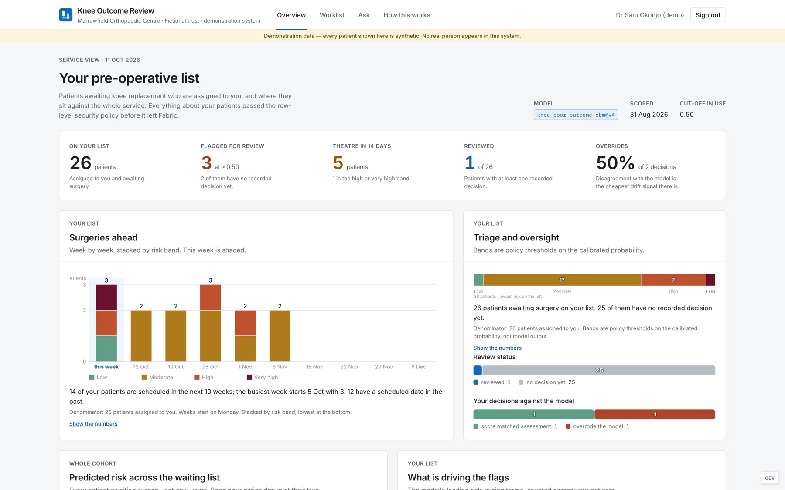
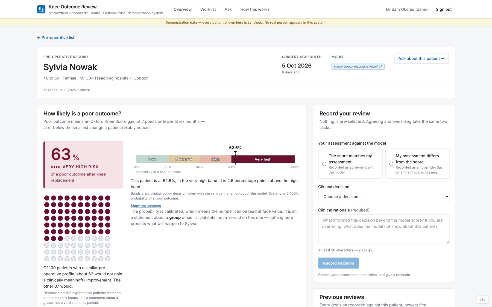
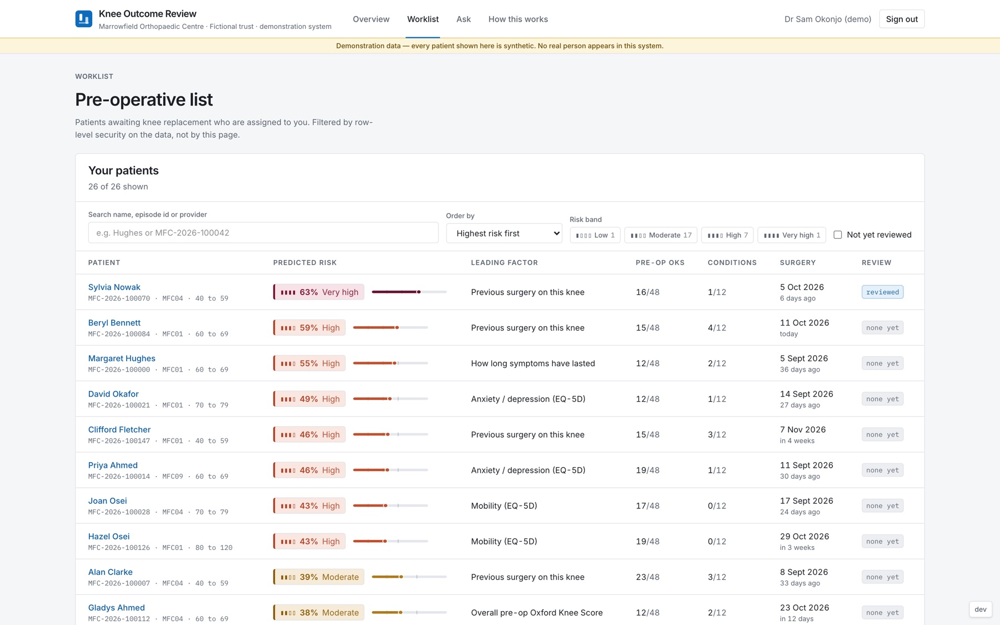
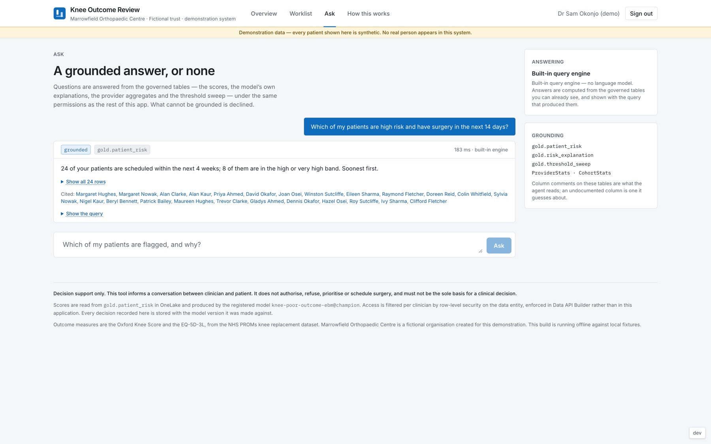

From Notebook to Bedside.
A clinical risk prediction model taken all the way from a notebook to an app a clinician could use, built end to end in Microsoft Fabric. Co-presented at FabCon Europe 2026.

Overview: a clinician's list against the whole service. Screenshots are from the offline demo build: the hospital is fictional and every patient is synthetic.
What it is
The talk started from our EAISI capstone: a model that predicts, before surgery, which knee replacement patients are likely to have a poor outcome, trained on the public NHS PROMs data. For FabCon we rebuilt it as a production-style pipeline in Microsoft Fabric, put a governed clinician app on top, and walked 50+ attendees through every step.
A poor outcome is defined clinically: an Oxford Knee Score gain of 7 points or fewer six months after surgery, at or below the smallest change a patient reliably notices.
The pipeline
- Bronze, silver and gold: raw NHS PROMs files ingested and cleaned into Delta tables with PySpark notebooks
- Training tracked in MLflow and registered in Fabric, with a hyperparameter search, threshold analysis and subgroup checks
- A calibrated Explainable Boosting Machine, so every score comes with the model's own reasoning, and SHAP as a contrast
- Batch scoring writes risk scores and explanations back to gold, then syncs them to a SQL database in Fabric
The app
- Built with Rayfin: a code-first data model in TypeScript becomes a SQL database, a GraphQL API, Entra ID sign-in and hosting, all inside Fabric
- Row-level security, so clinicians only see their own patients
- An Ask page that answers questions from the governed tables, optionally through a Fabric Data Agent, and declines what it cannot ground
- Every clinician decision, agreement or override, is recorded against the model version: the human-oversight record

Patient: a calibrated probability, explained, next to the decision form.

Worklist: risk, the leading factor and review status per patient.

Ask: answers grounded in the governed tables, with the query shown.
Concepts
Key takeaway
Building the whole chain showed that calibration, clear explanations and a record of clinician decisions matter as much as accuracy when a score is meant for clinical use.